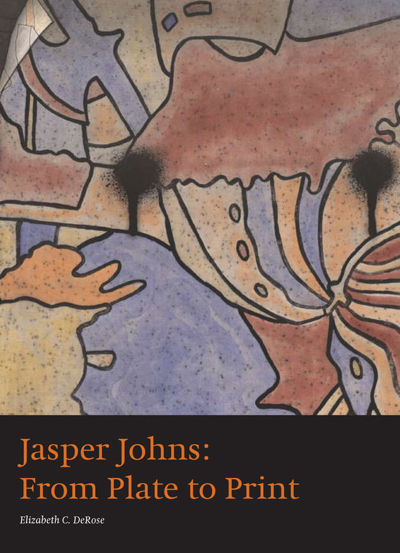

Dacia Ray
Copy Editor - Seattle, WA
I am a freelance copy editor with over 15 years of experience working on a variety of projects from magazines to books to corporate websites. In addition to copy editing, I have a background as both a journalist and project manager at several publications, start-ups, and design firms. Whether you are looking for a final proofread or an experienced eye to make your copy sing, I can help you. I can edit in Word, InDesign, Google Docs, or HTML with or without version control (Git).
"Dacia has done copy editing work for me since 2007 and is truly one of the best. Dacia provides spectacular work quickly, reliably backed up with sharp insight, intelligence, and improvements. Hire her!"
- Henk Groenewald
The Brand Ecologist
Selected Work
-
- 
-
Jasper Johns:
From Plate to Print
-

-
FHLB of Seattle
Annual Report
-
-
Chihuly:
Burned Drawings Volume 1
-
Chihuly:
Client List
Publications
- Yale University Art Gallery
- MediaPost.com
- Sew News magazine
- Seattle Business magazine
- Past the Popcorn
- Jonathan Raker and the Rise of Eve
- Memoirs of Doris and George Van Vleet
Corporate
- Clearwater Paper
- Coca-Cola
- Boeing
- Chihuly
- GAP
- Microsoft
- BNSF Railways
- Federal Home Loan Bank of Seattle
- Agility Logistics
- Itron